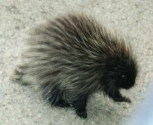

Lay of the Land
Since the chalet is located on 10.63 acres of land, there is a lot around to look at, hike or bike on, and to take pictures of. We'll show you some of what it looks like. To see the rest, come down and walk around. It will take more than a day to find all of the cool things and take in all of the scenery that the chalet has to offer.
This is grams enjoying the walking path on the ridge. Grandmother tested, grandmother approved.
No creek would be complete without a lazy hammock on its bank. True, you can lay in the hammock, fall asleep and spend the day relaxing - but that is okay. Oh, and the creek is fun to play in, even if it is almost always cold.
Paul and Rachael are enjoying the creek on a beautiful day. Paul shot a shotgun for the first time that day. The rock to the right of them is called "Chrisy's Rock". That is where Chrisy sat and ate lunch before the chalet was built - nearly 8 years ago now. The creek has changed course and the bank eroded since then, due to spring thaw of the snow, but that rock is still a good perch.
One of my personal favorite pictures, here is Lee Ann hanging out in the creek. The bridge behind her allow those who don't like to walk over the rock and risk getting wet a way to the other side. The brush isn't always that high - we keep it mowed. The creek is large enough to do some creek walking - with some old sneakers or Teavs. Be fore warned, the water usually stays cold. Dad knows this well - he's fallen in by accident a number of times (not that he'll admit to all of them).
This is a view off the front porch looking down the ridge. We've done a lot of work to allow the ferns to fill in the hillside. The forest is open and quite a joy to look at. Give the trees 15 more years, and it will be a great mature forest. We've given it a head start, now nature must take her course.
As you can probably imagine, the area around the chalet is beautiful in the fall. A lot of people come down to Ellicottville during fall-fest to see the brilliant colored leaves. This picture above was taken on the road, about 1-mile from the chalet, looking up at the valley where the chalet is located. Hiking or mountain biking is fun and especially picturesque this time of year.
No survey of the land would be complete without a view of the creek in the winter. The bridge posing in this picture is the same bridge in the picture above with Lee Ann. Since the chalet is very close to Holiday Valley, we usually get a considerable amount of snow.
The winter of 2000-2001 brought with is a considerable amount of snow. This picture of the side deck shows just a bit of what it looks like. In order to appreciate it, you have to experience it for yourself.
|  |
There are many critters running around in the woods at the chalet. You'd be hard pressed to actually see any of them. Some of the animals we've seen over the years have been deer, squirrels, porcupines, foxes, raccoons, mice, turkey, pheasant and many types of birds. In fact, while Lee Ann and I were walking in the wood, a turkey flew off and scared us half to death. Hummingbirds have come up to feed on humming bird feeder. They are very fast, so it is hard to catch them on film.
Design by: Scott (scott@dickersonchalet.com)